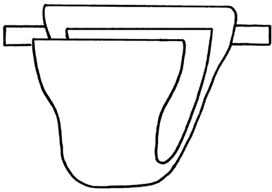

|  |
(Dyper) |
Dyper is a framework for dynamic perimeter enforcement based on the notion of a pinhole, which is a dynamic rule that allows TCP/UDP traffic to pass from a specific external host to a specific port on a specific internal host. The basic approach is to open a pinhole exactly when the external host needs to establish an inbound auxiliary connection and to close that pinhole exactly when the external host no longer needs the connection. By using this approach, sites with least privilege policies can still communicate, but users cannot hijack pinholes for their own purposes because the internal host will already be using the associated ports.
A single pinhole corresponds to a TCP/UDP ACL on a perimeter enforcer, which is defined by the 5-tuple of protocol, source IP address, source port, destination IP address, and destination port. Since pinholes only require basic ACLs, which can be done at line-rate on many network devices, the pinhole approach supports performance at the maximum capacity of the network itself. To successfully implement a pinhole approach, however, it is necessary to accurately determine three key pieces of information: which internal ports will be used for auxiliary connections, when these connections are needed, and which external host will initiate them. This information is gathered by an interposition agent that intercepts system calls running within internal clients and servers.
Once all of the required information has been observed by the interposition agent and a pinhole request has been generated, that request must be carried out on the perimeter enforcer. The perimeter controller is defined to be the system that interacts with the perimeter enforcer to dynamically open and close pinholes upon request. Since network services will be hosted and invoked on potentially many different systems, pinhole requests generated by an interposition agent must be authenticated and sent to the perimeter controller host. After a request reaches the perimeter controller, it is authorized against a set of allowed perimeter changes. Finally, the request is executed by making the appropriate ACL changes on the perimeter enforcer.